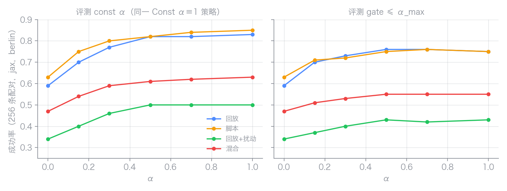
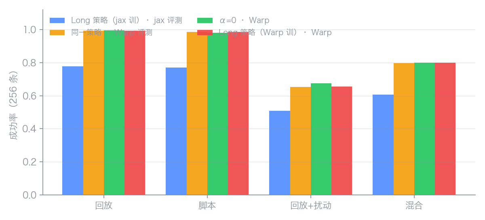
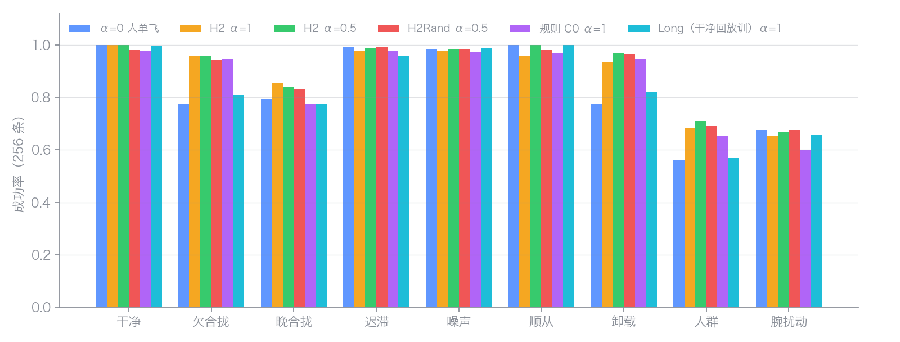
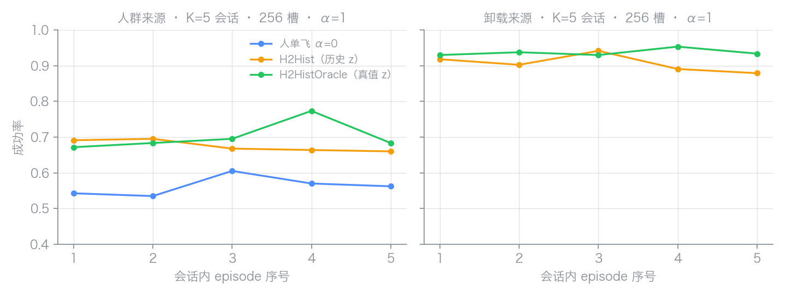

这是 Stage 1.3 计划第 4 步（RL 残差策略）的第一次实际运行，接在第 2 步物理回放预检之后（预检结果记在 Stage 1.2 结果页）。同一晚还做了三件配套的事：按录像核对并修订了腕部模拟方案、做了 Stage 1.3 相关工作的批判性综述、并按综述里的收益加训了两条对照臂。设计文档：Dex_Hand/human_machine_interaction/hand_control/plan/stage13-shared-grasp-design.md（§1.1 录像核对、§2.1 动态参与、§6c 环境实现、§8 学习曲线）；综述：hand_control/plan/2026-09-13-stage13-related-work.md。
info 的 bug（此前每个环境槽只有第一个 episode 是真的），把训练里的人换成有缺陷、会反应的人群 v2：人单飞被压到 0.56–0.78，在人群上训的残差把手指侧缺陷补回 15–19 点、不伤干净的人、抬离早 0.1–0.3 s；而干净回放训的旧策略面对同样的缺陷几乎不帮——辅助的价值只能来自训练时见过的人的缺陷。| 版本 | 日期 | 变了什么 | 原因／证据 | 结果／记录 | 截图／视频 |
|---|---|---|---|---|---|
| v1 | 2026-09-13 | L20SharedPinch 环境首轮：α=0 零线，门控残差（α_max 0.3，两个 seed）、Const α≡1、Finger、Speed 四条臂，20M 步，berlin jax | Stage 1.3 计划第 4 步的第一次实跑；先看环境能不能训、零残差的人自己能抓多少 | §环境 → §对照臂。策略数字被 v3 取代（jax 后端离群）、被 v4 取代（训练器 full_reset bug） | 六段 rollout |
| v2 | 2026-09-14 上午 | 不重训：同一 Const 策略只换仲裁（const／gate 扫描、目标换数据集平均）；真机接线（影子仿真、包络、启动脚本）与第一次真人在环 session 20260914T113530Z | 回答「要不要预测器、α 多大」；把控制器接到头显并修包络判据 | §α 扫描、§真机接线。扫描数字被 v3／v4 取代（同上），接线事实有效；仍是唯一一次真人 session，无 const-对-off 对比 | 扫描曲线；头显截图待补 |
| v3 | 2026-09-14 下午 | Long／LongPred／LongPredNoContact 三臂（窗口 3 s、预测器作目标、接触点目标）；4090 换 Warp 后端，发现 jax ≠ Warp 且离群的是 jax | 预测器接入（T3 的仿真版）；Warp 快 8 倍，但同一策略两后端成功率差 20 点 | §预测器接入。此后 jax 数字降为参考；策略数字被 v4 取代（full_reset bug） | jax 对 Warp |
| v4 | 2026-09-16 | 修训练器 full_reset bug；人群 v2（有缺陷、会反应的仿真人）重训 H2／H2Rand，加 C0 规则、C5 行为克隆人、H2Pred（ens5 目标）、conf α | 研究备忘 C1：回放的人是开环的，策略没见过缺陷；bug 使每槽每 epoch 只有一个真 episode | §人群 v2 A–H。当前有效的策略数字与部署导出（H2Rand 包） | 跨代理矩阵图 + H2Rand rollout |
| v5 | 2026-09-16 | Stage 1.4 首轮：会话持续 K=5、历史特征 z、字典观测非对称 critic，H2Hist／H2HistOracle 两臂 | 研究备忘 C3：跨 trial 推断「这次是谁」 | §I，验收 #2 未过；计划页在 Stage 1.4 v2 | 按序号曲线 |
版本 v1 · 2026-09-13 · berlin jax · 策略数字已被 v3／v4 取代，零线与环境事实仍有效
| 项 | 实现（2026-09-13） | 与计划的差别 / 原因 |
|---|---|---|
| 代码 | training/reinforcement_learning/services/level_1_playground_envs/l20_hand/shared_pinch.py，注册名 L20SharedPinch；轨迹库 shared_pinch_bank.py → training/artifacts/stage13_shared_pinch/trajs.npz；评测 level_3_evaluation/shared_pinch_eval.py；检查 check l20-shared-pinch（25 项通过） | — |
| 腕部 | hand_base_link 放在 free joint 上（armature 0.005），由软 weld（solref 0.02）跟随 mocap 目标；目标 = 录像里头显施加的腕部目标 H，按 cube 坐标系回放 | 计划是部署的 V2 有界 PD（60 N / 4 N·m）。用录像的目标 H 驱动 PD，掌部滞后录像 ≈ 2 cm（0.44 m/s 时；操作者当时是看着补偿的），回放抓不到 cube（0% 抬起）；V2 的 dr 0.15 在 250 Hz 显式积分下发散。PD 保留为 wrist.drive="pd"，要先有对录像实际掌部的前馈才能当训练驱动 |
| 物理 | sim_dt 0.004、控制 50 Hz、episode 5 s；手指执行器 kp 8 / kv 0.08 / ±2 N·m；手摩擦 1.4 condim 4；cube 54 mm / 120 g / 摩擦 1.2；每个手身 gravcomp=1 | 对齐会话 MJCF（原 MJX 手模型 kp 2 / ±1 N，指尖是胶囊体而会话是网格） |
| 人手指令 u_h | 回放录像的 retarget 命令；或 p=0.5 用第 2 步的脚本闭合（3 cm 内起，0.4 s 线性闭到抬离时的 u_h） | 脚本目标改为抬离时的命令而不是标签关节角：标签是接触下的实际角，比操作者的命令少 0.09–0.15 rad 挤压量（拇指/食指），照标签闭合等于零夹持力 |
| 抬离 | 解析式 8 cm / 1 s，起始时刻相对录像抬离 U(−0.3, +0.05) s；抬起段与录像接近段重叠 | 数据集抬离后只有 ≈ 11 个样本，Transport 段未进 npz |
| 扰动 | 终点 ±2 cm / ±15°（p 0.7）、速度 0.8–1.25×（p 0.7）、cube 偏航随机 | 犹豫停顿、瞄准偏差、反应式 u_h、质量/摩擦随机化未做 |
| 目标 g | 标签抬离抓姿（掌部相对 cube 9 + 关节 16），T2 口径；预测器 ĝ 未接 | — |
| 动作 / 命令 | Δu = 0.15·a，u = clip(u_h + α·Δu)；α 按设计 §2 的表在环里算、进观测（d_goal 6→3 cm 升到 0.15，用户在合拢时 0.3，≥2 指接触后保持，张手归零） | — |
| 观测 94 维 | q16、dq16、掌部相对当前 cube 9、u_h 16、g 25、指尖接触 5、α 1、腕目标−实际掌部 6 | — |
| 奖励 | 抬起并保持 1 s +5（一次）、拇指+食指同时接触 +1（一次）、接触 +0.01/步、保持 +0.02/步、−0.1·mean|q−q_goal|、−0.1·mean|α·Δu|、−0.05·平滑、−0.1·饱和比例、掉落 −3 终止 | 接触力惩罚未做 |
| 成功 | success = cube 离桌 ≥ 2.5 cm 连续 1 s 且未掉落；success_strict 另要求掌部仍在标签 T_OP 的 3 cm 内（只作报告） | 抬起后掌部相对 cube 的位置与标签差中位 5–6 cm：标签的 cube 系是录像里被推动后的 cube，且 cube 在两指间会转 |
| PPO | brax PPO，2048 envs，unroll 40，32 minibatch，lr 3e-4，entropy 1e-2，discount 0.97，reward scale 0.1，网络 512-256-128；请求 20M 步（brax 补到评测边界，实际 24.9M） | 与 L20CubePick 相同 |
写环境前把设计稿 §1 的腕部假设对着数据核了一遍，五处不符，已写回设计稿 §1.1：
| 量 | 录像 | 设计稿原假设 |
|---|---|---|
| 接近时长 | 2.1 s [1.7, 3.0] | — |
| 峰值速度 | 0.44 m/s [0.32, 0.65] | 0.15–0.35 m/s |
| 峰值时刻 / 总时长 | 0.30 [0.18, 0.74] | 直线加小弧 |
| 进入终点 3 cm 内到抬离 | 0.48 s [0.29, 1.12] | 走到位、保持、再抬 8 cm |
| u_h 半闭合到抬离 | 0.44 s [0.01, 1.47] | 距目标 < 3 cm 后线性闭合 |
| 掌部旋转量，起点到抬离 | 27° [17, 66] | 终点姿态 ±15° |
还有一点设计稿没提：95 条录像全是成功抬离，回放只覆盖操作者不用辅助也抓得好的腕部位姿；辅助有价值的近失状态只能靠终点扰动造出来。
单条回放逐步看：掌部到目标距离在抬离前 1 s 左右降到 2 cm（α 0.15），录像里的合拢速率 ≈ 0.4 rad/s 触发 closing（α 0.30），两指接触后 α 保持到抬起结束。失败的那类 trial 是接触后又丢掉、cube 被推走（掌部到目标从 1.6 cm 涨到 9.5 cm）。所以 α_max 是被到达的，评测里 α ≥ 0.3 的时间占 10%–25%（取决于来源）。
α·Δu ≡ 0，每个来源 256 条，seed 0，weld 腕。berlin H200 与 4090 两边数字一致。
| 人手来源 | success | strict | 抬起 | 接触形成 | 掉落 | 滑移中位 | α≥0.3 占比 |
|---|---|---|---|---|---|---|---|
| 回放，无扰动 | 0.59 | 0.05 | 0.70 | 0.94 | 0.11 | 0.5 cm | 0.23 |
| 脚本闭合，无扰动 | 0.63 | 0.07 | 0.75 | 0.91 | 0.11 | 0.6 cm | 0.22 |
| 回放，终点/速度扰动 | 0.34 | 0.02 | 0.43 | 0.65 | 0.09 | 0.6 cm | 0.10 |
| 训练混合（默认） | 0.47 | 0.05 | 0.57 | 0.77 | 0.11 | 0.7 cm | 0.14 |
第 2 步在会话 MJCF + 刚性 weld 下回放能保持 99%，这里无扰动回放只有 70% 抬起：差距来自扰动之前的物理差异（指尖胶囊体对网格、dt、摩擦模型、软 weld），未逐项定位。「训练混合」一行在修掉一个共享 ConfigDict 被就地改写的 bug 之后才有效；bug 之前评出的该行等于上一个来源的复制。
berlin，run L20SharedPinch-20260913-225032，checkpoint 000024903680，训练 13 分钟（含编译）。评测与基线同 seed、同来源、各 256 条。
| 人手来源 | success α=0 → 策略 | 抬起 | 掉落 | 施加残差 mean|α·Δu| | 关节偏离 |q−q_goal|（抬起段） |
|---|---|---|---|---|---|
| 回放，无扰动 | 0.59 → 0.63 | 0.70 → 0.72 | 0.11 → 0.09 | 4.6 mrad | 0.780 rad |
| 脚本闭合，无扰动 | 0.63 → 0.64 | 0.75 → 0.74 | 0.11 → 0.10 | 4.5 mrad | 0.781 rad |
| 回放，扰动 | 0.34 → 0.37 | 0.43 → 0.44 | 0.09 → 0.07 | 2.1 mrad | 0.775 rad |
| 训练混合 | 0.47 → 0.48 | 0.57 → 0.58 | 0.11 → 0.09 | 2.8 mrad | 0.779 rad |
读法：256 条的二项标准差约 3 个百分点，所有差别都在噪声内；策略能施加的残差上限是 45 mrad（α 0.3 × 0.15 rad），实际只用了 2 到 5 mrad，没有动作饱和。训练曲线（每 1.3M 步一次评测回报）在 2.4 到 4.0 之间来回，没有趋势。关节偏离 0.78 rad 与 α=0 相同，没有改变用户的抓法。
综述（2026-09-13-stage13-related-work.md §5）给了五条有文献支撑的改动，其中两条是环境内改动，当晚各训一条臂；再加 advisor 提的 α≡1 对照臂分辨「授权太小」和「没有学习信号」。全部 20M 步、一个 seed，与 α=0 同 seed 配对。
| 臂 | 改动 | 依据 | 在哪跑 | 结果 |
|---|---|---|---|---|
| Const | 无门控，α ≡ 1（残差上限 0.15 rad） | 诊断：能否在完全授权下超过 α=0 | 4090 / WSL2，seed 0 | 评测也 α≡1：success 0.83 / 0.85 / 0.50 / 0.63（α=0：0.59 / 0.63 / 0.34 / 0.47），掉落 0.01 / 0.02 / 0.01 / 0.04，残差 40 mrad；评测时改套几何门控（α_max=1）：0.75 / 0.75 / 0.43 / 0.55 |
| Finger | 五个按指 α_i：指尖到 cube 表面距离（5→2 cm）+ 该指自己的合拢速率；指 i 接触后保持 α_i；用户伸展该指 α_i 归零；观测加 5 维 | Trout et al. 2025，Nature Communications | berlin，seed 0 | success 0.64 / 0.70 / 0.40 / 0.50，掉落 0.10 / 0.09 / 0.05 / 0.10，残差 1.4–2.6 mrad：四个来源都比 α=0 高 3–7 个百分点，方向一致，单 seed 未达显著 |
| Speed | Δu = 0.5·a_s ⊙ (q_goal − u_h) + 0.15·a_r，a_s ∈ [0, 2]，32 维动作：先学沿脚本闭合方向的速度缩放 | GraspGF 2023 消融（仅方向 19.5%、方向×速度 5.1%、全模型 56.5%） | berlin，seed 0 | success 0.61 / 0.62 / 0.35 / 0.48，残差 2.7–5.4 mrad：与 α=0 无差别 |
| seed 1 | 默认门控臂第二个 seed | — | 4090 / WSL2 | success 0.66 / 0.67 / 0.38 / 0.48，掉落 0.08 / 0.09 / 0.06 / 0.10，残差 2.3–5.1 mrad：与 seed 0 同方向，无扰动源 +4 到 +7 |
| 臂 | 训练 α | 评测 α | 回放 | 脚本 | 回放+扰动 | 混合 | 掉落（混合） | 残差（混合） |
|---|---|---|---|---|---|---|---|---|
| α=0 基线 | — | 0 | 0.59 | 0.63 | 0.34 | 0.47 | 0.11 | 0 |
| 门控 seed 0 | 门控 ≤0.3 | 门控 ≤0.3 | 0.63 | 0.64 | 0.37 | 0.48 | 0.09 | 2.8 mrad |
| 门控 seed 1 | 门控 ≤0.3 | 门控 ≤0.3 | 0.66 | 0.67 | 0.38 | 0.48 | 0.10 | 3.1 mrad |
| Finger 按指门控 | 按指 ≤0.3 | 按指 ≤0.3 | 0.64 | 0.70 | 0.40 | 0.50 | 0.10 | 1.7 mrad |
| Speed 速度缩放 | 门控 ≤0.3 | 门控 ≤0.3 | 0.61 | 0.62 | 0.35 | 0.48 | 0.10 | 3.4 mrad |
| Const | α≡1 | 门控 ≤1 | 0.75 | 0.75 | 0.43 | 0.55 | 0.04 | 8.0 mrad |
| Const | α≡1 | α≡1 | 0.83 | 0.85 | 0.50 | 0.63 | 0.04 | 39.5 mrad |
读法。三条 α_max=0.3 的臂（门控两个 seed、按指门控、速度缩放）都只把残差用到几 mrad，收益在 0 到 7 个百分点之间，只有按指门控四个来源同向。把授权放开到 α≡1 训练的对照臂，同样 20M 步：评测时也 α≡1，success 高 16 到 24 个百分点（回放 0.59→0.83，混合 0.47→0.63），掉落从 10% 降到 1%–4%，残差 40 mrad，仍只用了 0.15 rad 上限的四分之一，关节偏离 0.78 rad 与 α=0 相同，没有改变用户的抓法；评测时套上部署用的几何门控（α_max=1）是 0.75 / 0.75 / 0.43 / 0.55，比 α=0 高 8 到 16 个百分点，这才是可部署的数字：门控保留张手归零、追踪失效归零和时机，幅度不压。所以第一版「没动静」的主因是 α_max 0.3 × δ 0.15 = 45 mrad 的授权上限，不是环境没有学习信号；设计稿 §2.1 的 α_max 扫描（0.15 / 0.3 / 0.5 / 1.0）就是下一步，而且「训练时全授权、部署时套门控」这一行说明门控可以只管时机、不必压缩幅度。按指门控的方向一致值得再跑两个 seed；速度缩放在 0.3 的授权下没有帮助。
评测 JSON（每来源 256 条的全部指标）在 assets/l20-stage1-3-results/eval-*.json。训练曲线（每 1.3M 步一次评测回报，10 条 episode）：门控 seed 0 在 2.4–4.0 间无趋势；seed 1 末段 3.4–3.6；Finger 末段 3.8；Const 末段见其 log。4090 上的两次训练结束时 brax 的收尾渲染在无显示的 WSL 里抛 Renderer 异常（exit 1），checkpoint 已完整写出，不影响结果。
综述另外三条不在环境里：把共适应当作测量项（部署日志）、保留调度 α 加一致性项与介入占比指标（介入占比已在评测输出：α>0 时间、mean|α·Δu|、饱和比例）、kNN 检索式人类代理（只在 RL 启动后做）。
版本 v2 · 2026-09-14 上午 · 不重训，只换仲裁；真机接线与第一次真人 session
不重训。拿 Const α≡1 训练出来的策略，评测时把 α 换成手动常数（const）或几何门控的上限（gate ≤α_max），四个人手来源各 256 条、同 seed 配对。最后四行把策略与门控收到的「目标抓取位姿」从这条轨迹自己的抬离位姿（oracle）换成数据集 95 条的平均位姿，也就是真机上没有 Stage 1.2 预测时能喂的东西。原始 JSON 在 assets/l20-stage1-3-results/sweep/。
| 评测 α | 回放 | 脚本 | 回放+扰动 | 混合 | 掉落（混合） | 施加残差（混合） |
|---|---|---|---|---|---|---|
| 0（纯人手，同 seed） | 0.59 | 0.63 | 0.34 | 0.47 | 0.11 | 0 |
| const 0.15 | 0.70 | 0.75 | 0.40 | 0.54 | 0.06 | 5.9 mrad |
| const 0.3 | 0.77 | 0.80 | 0.46 | 0.59 | 0.02 | 11.6 mrad |
| const 0.5 | 0.82 | 0.82 | 0.50 | 0.61 | 0.02 | 19.3 mrad |
| const 0.7 | 0.82 | 0.84 | 0.50 | 0.62 | 0.03 | 27.1 mrad |
| const 1.0（即上表「评测也 α≡1」行） | 0.83 | 0.85 | 0.50 | 0.63 | 0.04 | 39.5 mrad |
| gate ≤0.15 | 0.70 | 0.71 | 0.37 | 0.51 | 0.08 | 2.2 mrad |
| gate ≤0.3 | 0.73 | 0.72 | 0.40 | 0.53 | 0.05 | 3.2 mrad |
| gate ≤0.5 | 0.76 | 0.75 | 0.43 | 0.55 | 0.05 | 4.7 mrad |
| gate ≤0.7 | 0.76 | 0.76 | 0.42 | 0.55 | 0.04 | 6.0 mrad |
| gate ≤1.0（即上表「部署门控」行） | 0.75 | 0.75 | 0.43 | 0.55 | 0.04 | 8.0 mrad |
| const 1.0，目标 = 数据集平均位姿 | 0.83 | 0.84 | 0.50 | 0.62 | 0.02 | 36.6 mrad |
| gate ≤1.0，目标 = 数据集平均位姿 | 0.68 | 0.71 | 0.40 | 0.54 | 0.05 | 5.3 mrad |
| 0，目标 = 数据集平均位姿（口径核对：应与第一行相同） | 0.59 | 0.63 | 0.34 | 0.47 | 0.08 | 0.0 mrad |
| 门控 ≤0.3 训练出的首版策略，硬给 const 1.0 | 0.68 | 0.69 | 0.42 | 0.55 | 0.07 | 38.6 mrad |
读法。（1）收益在 α 0.3 到 0.5 就饱和：const 0.5 与 const 1.0 差 1 到 2 个百分点，施加的残差只有一半（19 对 40 mrad），掉落同为 2%。第一轮 α_max 0.3 没效果，是因为策略在 0.3 授权下训练，不是 0.3 授权本身不够——最后一行证明了这点：把首版门控策略硬给 α=1，成功率只到 0.68 / 0.69 / 0.42 / 0.55，掉落 10%–12% 与纯人手一样多，它在 45 mrad 授权下学到的东西本来就少。（2）同一策略同一上限，gate 比 const 低 6 到 8 个百分点：门控在闭合前只给 alpha_pre=0.15，而残差的价值集中在闭合与抬起那几百毫秒。部署时门控保留张手归零与时机即可，幅度不必再压。（3）不需要预测器：喂平均位姿，const 1.0 的成绩与 oracle 目标完全一致（0.83 / 0.84 / 0.50 / 0.62 对 0.83 / 0.85 / 0.50 / 0.63），策略基本不看目标槽，看的是当前接触与关节状态；gate + 平均位姿反而掉到 0.68，因为 d_goal 用平均位姿算，门开得更少。真机第一版因此用 const α 0.5 + 部署包络，不用几何门控，也不接 Stage 1.2 预测。

头显拥有物理，每 0.5 s 才回报一次状态，策略却要 50 Hz 的关节、掌-方块相对位姿与指尖接触。Mac 侧因此跑一个影子仿真：加载 APK 烘的同一份 MJCF，每条命令（u_h + 手腕 mocap 目标）先喂影子再发头显，按真实时间间隔步进；头显回报的方块位姿经固定的模型→头显世界映射（Unity 里 −90° 偏航加 workspace 平移，在一个 52 试次 session 上复现头显自己的 mocap 位置中位数 3 mm / p95 9 mm）映射回来锚定影子的方块。策略本身是 brax checkpoint 导出的 numpy MLP（512/256/128，与 brax 差 2e-7），观测构造逐槽复刻训练环境（对 48 步参考对误差 2e-7），推理 0.05 ms，影子 0.14 ms/命令。部署包络在任一条件下把 α 归零：无头显状态、追踪丢失、暂停、任务阶段不在 Ready/LiftCandidate/Transport/PlaceCandidate、掌到目标 > 6 cm、用户张手后直到再次闭合——策略从没见过松手，每个训练回合都在握稳 1 s 时结束，松手由包络管。
用录好的 session 离线预演（命令流按真实 ack 时序过一遍控制器，和头显自己的 100 Hz 物理日志比）：关节 RMS 中位数 6 mrad；手掌 6–8 mm、1–2°；方块 4–7 mm 中位数但 p95 14 到 21 cm——影子里抓没抓住与头显不一致时方块分道扬镳，1 Hz 记录的 ack 才纠一次；五指接触标志逐位一致 86–89%。观测 z 分数：相对位姿与手腕误差各槽都在 1σ 内（坐标系与单位对了），但中指、无名指、小指屈曲在包络打开的 tick 上中位数 −1.7 到 −2.8σ：训练窗口只覆盖抬离前 1.5 s 的预塑形手，真人靠近方块 6 cm 内时其他手指还张着，策略没见过这种手。两份预演报告：dryrun-20260913T191049Z-gate1.json、dryrun-20260913T171559Z-const0.5.json。
入口 sh hand_control/demo/collect_stage13_shared.sh（默认 const 0.5；MJQUEST_ALPHA_MODE=gate 门控对照；off 为同一记录格式的直接遥操作基线），--purpose shared，记录里 ctrl 是实际发出的混合命令，另存 ctrl_human 与每条命令的 α、包络原因、Δu、接触、z 分数。头显侧把回报周期 0.5 s → 0.02 s 并加上五指接触与掌部位姿的 C# 改动已写好，未构建、未安装。（09-14 下午已构建安装，第一次真人 session 在其上跑。09-16 头显场景两次换成多物体场景，最终为 objects4-20260916：方块、圆柱、球、长条每个 trial 都在桌上、目标按 trial 命名；启动脚本默认 XML 跟着换，控制器按遥测里的 task_object 切换影子物体并把非目标物体的位姿同步进影子，非方块目标一律 α=0，残差只在方块 trial 介入。没有 1.3 结果在多物体场景上跑过，所以不单立版本。）
版本 v3 · 2026-09-14 下午 · 三条新臂 + Warp 后端；jax 数字自此降为参考
目标槽由 training/stage12_intent … bank_predictions 在轨迹库每个 50 Hz 网格点上预先算好，环境每步更新，等价于 20 ms 一次的实时预测。pred_m0 是留一 session 的残差 M0（预测这条 trial 的模型没见过它所在的 session；抬离前 1 s 误差 2.78 cm、抬离时 1.01 cm，与 Stage 1.2 页面一致）；pred_final_* 是部署 checkpoint，在全部 95 条上训过、此处样本内（1 s 误差 0.3 cm，看着好但不算数）。JSON 在 assets/l20-stage1-3-results/pred/。
| 目标来源 | const 1.0 | gate ≤1.0 |
|---|---|---|
| oracle（本条真实抬离位姿） | 0.83 / 0.85 / 0.50 / 0.63 | 0.75 / 0.75 / 0.43 / 0.55 |
| 数据集平均位姿 | 0.83 / 0.84 / 0.50 / 0.62 | 0.68 / 0.71 / 0.40 / 0.54 |
| pred_m0 留一 session | 0.84 / 0.86 / 0.48 / 0.62 | 0.76 / 0.76 / 0.43 / 0.55 |
| pred_final_m0 样本内 | 0.83 / 0.84 / 0.50 / 0.62 | 0.75 / 0.73 / 0.45 / 0.54 |
| pred_final_ml 样本内 | 0.81 / 0.81 / 0.50 / 0.63 | 0.75 / 0.72 / 0.43 / 0.55 |
| pred_final_rl 样本内 | 0.81 / 0.82 / 0.48 / 0.61 | 0.77 / 0.76 / 0.42 / 0.54 |
const 下预测器接不接都一样，策略不看目标槽；gate 下预测器把平均位姿丢掉的 6 到 7 个百分点全补回来、与 oracle 持平。预测器的价值在时机（门控用目标算距离），不在手指动作。仿真里接不接一样不是目标没信息（抬离位姿到平均值平均差 3.1 cm，抬离前 1.5 s 手掌还要走 11.8 cm），而是手指残差的最佳动作不取决于它：手掌到哪是手腕带过去的，何时合拢看 u_h、合多紧看接触。
α≡1，20M 步，berlin；接触点来自头显物理记录的真实接触位置（contact_label，cube 系；随终点扰动一起平移），接触误差用真实接触点算、未接触时退化到指尖 site；这批数据的接触点没有变化（各轴 std 0.7–0.9 cm，永远捏 ±x 两面同一处），所以它只能回答"表示方式有没有用"，回答不了"不同位置"。接触误差列只在 LongPred 臂里是到记录接触点的距离，其余臂是到方块中心的距离，不可跨臂比。
| 臂 | 成功 α=0 | 成功 策略 | 掉落（混合） | 接触误差@抬离 α=0 → 策略（cm） |
|---|---|---|---|---|
| Long：oracle 目标，只拉长窗口 | 0.54 / 0.57 / 0.37 / 0.48 | 0.78 / 0.77 / 0.50 / 0.61 | 0.02 | — |
| LongPredNoContact：目标 = pred_m0 | 0.53 / 0.55 / 0.38 / 0.48 | 0.77 / 0.78 / 0.50 / 0.59 | 0.02 | — |
| LongPred seed 0：+ 接触点目标与奖励 | 0.53 / 0.55 / 0.38 / 0.48 | 0.82 / 0.82 / 0.50 / 0.61 | 0.02 | 2.29 / 2.24 / 2.60 / 2.48 → 2.36 / 2.28 / 2.75 / 2.54 |
| LongPred seed 1（4090，jax 路径） | 同上 | 0.82 / 0.83 / 0.54 / 0.63 | 0.02 | → 2.35 / 2.24 / 2.59 / 2.46 |
窗口拉长后策略照样能学，提升幅度与短窗口一致；预测器接进来对手指动作无影响；接触点目标让成功率再高 4 到 5 个百分点（两个 seed 同向），但抬离时的接触点误差没有变小，策略拿的是"更早更实地合上"，不是"合到记录的那个点"。以上全部是 jax 后端的数字，下一节改变它们的读法。
为了让 4090 走 Warp（要求最新正式版 warp，不降级），4090 的 venv 升到 mujoco 3.13.0 / mujoco-mjx 3.13.0 / warp-lang 1.17.0（每个 MJX 版本钉死一个 warp：3.6→1.11.1、3.12→1.16、3.13→1.17），环境的指尖接触改读 MJCF contact sensor（jax 下与原读法逐步一致），Warp 下关掉每步一条的求解器截断警告。Warp 跑通：Long 臂 20.6M 步训练 91 s（约 13M 步/分，berlin H200 jax 路径的 8 倍）。然后拿同一个 berlin 训的 Long 策略在两个后端下评测，再在 Warp 下重训一次：
| 物理 | 零残差（纯人手） | Long 策略，jax 训 | Long 策略，Warp 训 | 手掌到目标 |
|---|---|---|---|---|
| jax，mujoco 3.6.0（berlin） | 0.54 / 0.57 / 0.37 / 0.48 | 0.78 / 0.77 / 0.50 / 0.61 | — | 6.1–6.9 cm |
| jax，mujoco 3.13（4090） | — | 0.78 / 0.77 / 0.51 / 0.61 | — | 6.1–6.9 cm |
| Warp，mujoco 3.13（4090） | 1.00 / 0.98 / 0.68 / 0.80 | 0.99 / 0.98 / 0.65 / 0.80 | 0.99 / 0.98 / 0.66 / 0.80 | 2.0–2.5 cm |
3.6 → 3.13 对 jax 路径零影响；但 Warp 下纯人手回放在干净来源上 98%–100% 成功、滑移 0.2 cm，与另一会话昨晚 MuJoCo C 物理的闭合回放（99% 保持）和真机上这些录像全部成功一致；jax 下方块常被推走或在指间转动。离群的是 jax 后端。因此本页前面 jax 上的 +16–24 个百分点、掉落 10% → 1%，相当一部分是策略在补偿 jax 求解的接触损失；在接近真实的物理里，单方块 pinch 上手指残差没有东西可补，Warp 训的策略与纯人手持平，扰动来源上也不帮忙（手腕偏了手指救不了）。这不否定共享控制，但否定了当前仿真设定能证明它：录像回放的人没有多样性、没有犹豫、手腕永远正确。下一步先把 Stage 1.1 的回放基线在 Warp 上重算，再决定 T2 以后还训不训手指残差；真机上 const 0.5 + 包络的第一版可以继续试，但预期按 Warp 的数字看。

pred/Long_313_jax.json、Long_313_warp*.json、Long_warptrained_warp.json。版本 v4 · 2026-09-16 · full_reset 修复 + 人群 v2 · 当前有效的策略数字
动机来自 2026-09-15 的调研（hand_control/plan/2026-09-15-human-adaptivity-research.md）：训练环里的"人"是 95 条录像的开环按时间回放，不看手、不看辅助、不看方块，抬腕时刻由录像决定；而 §C 已证明在 Warp 下这样的人自己 98%–100% 成功，残差无物可补。文献里每个 copilot 都是对着"差的"代理人训练的（Reddy 2018 的飞行员单飞 ≤15%；Schaff 2020 用与人匹配的高成功率代理训练时 copilot 只学会"稳住"）。所以按固定顺序改两件事：先给代理人加受控的缺陷，再让它对状态和辅助反应。
训练用的 playground 封装默认 full_reset=False：episode 结束时只恢复物理状态和观测，不重置 info。2 环境 CPU 实测：done 之后 step 继续 78、79……，lifted/success 保持 1，轨迹与起点不变。后果：每个环境槽在每个评估间隔里只有第一个 episode 是真的，之后腕目标直接跳到抬起位姿、方块留在桌上、每步判 drop 并再次重置——约一半样本是废样本，且每个槽只回放同一条轨迹。修法是 trainer_entry.patch_full_reset（full_reset=True；同一测试里 done 后 step 归 1、换轨迹）。本页此前所有"策略"行都是在这个 bug 下训出来的，方向未必错，但本节起全部用修好的训练器重训，不与旧行做同臂比较。
| 部件 | 机制 | 范围 | 文献原型 |
|---|---|---|---|
| 相位按状态推进 | 拇指 + 食指同时接触方块并保持 0.2 s 即触发抬起（kf 跳到录像抬离点），录像时刻兜底 | — | "辅助提前完成了，回放的人不知道" |
| 欠合拢 | 手指命令围绕 episode 起点的张开姿态按 amp 缩放 | 0.6–1.0 | 假肢文献的典型失败（Zhuang 2019、Trout 2025） |
| 晚合拢 / 迟滞 | 手指命令比腕晚 delay；一阶低通 lag | 0–0.4 s / 0–0.3 s | Reddy 2018 laggy pilot |
| 间歇噪声 | Bernoulli 开关 + 衰减的相关噪声 | p 0.05，σ 0.05 rad | Sha 2026 |
| 顺从 | 命令以 0.2 s 反应时间向"辅助上一步施加的残差"漂移，比例 α_h，封顶 0.15 rad | α_h 0–1 | Nikolaidis 2017 BAM、Backman 2023 |
| 卸载 | 人自己的合拢增量乘 1 − 0.5·α_h | 随 α_h | Aronson & Short 2024 |
每个 episode 抽一组参数，30% 保持干净；缺陷只放在手指自由度上（腕的扰动手指残差救不了，§C）。另加 α 模式 random（每 episode 从 {0.25, 0.5, 1.0} 抽一个）和 conf（α 随预测器逐步的 σ 缩放）。评测新增 lift_step（从 episode 起点到方块离桌的步数）。JSON 在 assets/l20-stage1-3-results/h2/。
| 来源 | 成功 | 抬起 | 抬离步数 | 读法 |
|---|---|---|---|---|
| 干净回放（人群关，录像时刻抬起） | 1.00 | 1.00 | 83 | = §C 的 Warp 干净回放 |
| h2_clean（干净 + 接触触发抬起） | 1.00 | 1.00 | 69 | 接触触发比录像时刻早 14 步（0.28 s） |
| 欠合拢 0.5 / 晚 0.5 s | 0.78 / 0.79 | 0.82 / 0.83 | 75 / 91 | 硬端单项缺陷各掉约 20 点（训练范围内的温和值 0.7 / 0.3 s 仍 0.99 / 0.97） |
| 迟滞 0.4 s / 噪声 0.2 | 0.99 / 0.98 | 0.99 / 1.00 | 83 / 69 | 即使硬端也几乎不伤 pinch |
| h2_conform（α_h=1，不卸载） | 1.00 | 1.00 | 69 | α=0 时无物可从 |
| h2_offload（α_h=1，卸载 0.5） | 0.78 | 0.82 | 75 | 人把一半合拢交给辅助而辅助为零：设计稿 §8 的失效链 |
| 人群，无腕扰动 | 0.76 | 0.82 | 78 | 手指侧损失 ≈24 点，残差按设计能补 |
| h2_population（人群 + 腕扰动 + 脚本 = 训练混合） | 0.56 | 0.61 | 68 | 再掉 20 点是腕侧，残差救不了；策略在这一行的上限约 0.76 |
人群把 α=0 的成功率压到 0.56–0.76，落在设计的 60–80% 区间。H2 策略的通过条件：在无腕扰动人群上比 α=0 高 ≥10 点、在 h2_clean 上不低于 0.98、并赢过接触门控闭合器这条零模型基线。该行后来单独实测（来源 h2_population_nowrist，256 个 episode）：α=0 0.76；H2 α=1 0.93、α=0.5 0.95；H2Rand α=0.5 0.92；接触门控规则 0.89——门槛以 +16 到 +19 通过，RL 比规则高 3–6 点，抬离 78 步提前到 65–76 步。JSON：h2_nowrist_alpha0_warp.json、H2_nowrist_a1.0_warp.json、H2_nowrist_a0.5_warp.json、H2Rand_nowrist_a0.5_warp.json、rule_nowrist_a1.0_warp.json。
| 来源 | α=0（人） | H2 策略 α=1 | H2 策略 α=0.5 | 抬离步数 α=0 → α=1 |
|---|---|---|---|---|
| 干净回放（人群关） | 1.00 | 1.00 | 1.00 | 83 → 84 |
| h2_clean（接触触发抬起） | 1.00 | 1.00 | 1.00 | 69 → 64 |
| 欠合拢 0.5 | 0.78 | 0.96 | 0.96 | 75 → 63 |
| 晚合拢 0.5 s | 0.79 | 0.86 | 0.84 | 91 → 81 |
| 迟滞 0.4 s | 0.99 | 0.98 | 0.99 | 83 → 68 |
| 噪声 0.2 | 0.98 | 0.98 | 0.98 | 69 → 64 |
| 顺从（α_h=1） | 1.00 | 0.96 | 1.00 | 69 → 61 |
| 卸载（α_h=1，0.5） | 0.78 | 0.93 | 0.97 | 75 → 60 |
| 人群（训练混合，含腕扰动） | 0.56 | 0.68 | 0.71 | 68 → 59 |
| 腕扰动回放 | 0.68 | 0.65 | 0.67 | 84 → 84 |
| 人群，目标槽换数据集平均（α=1） | 0.56 | 0.70 | — | 68 → 59 |
缺陷在手指侧时残差补得回来：欠合拢 +18 点、卸载 +15–19 点、人群 +12–15 点（人群上限约 0.76，剩下的是腕侧损失）；晚合拢只补 +5–7 点（手指到得晚，0.15 rad 的残差补不完）；迟滞、噪声本就 ≈0.98。不伤干净的人：α=0.5 下干净行 1.00；α=1 下顺从行掉 4 点，α=0.5 不掉。补测了顺从偏移量本身（终止步 16 维均值）：α=1 时 0.027 rad、α=0.5 时 0.016 rad，远低于 0.15 rad 的上限，所以"顺从回路放大残差"这个解释不成立；4 点在 256 个 episode 下也在噪声边缘，原因未查明。实测的只有一句：α=0.5 不掉，实机 const 0.5 是对的。提前完成：有辅助时抬离早 5–15 步（0.1–0.3 s），录像时刻抬起的干净回放不变，说明提前来自接触触发。腕扰动行不变（§C）。目标槽换成数据集平均后成绩不变，策略仍不看目标槽。施加的残差约 33 mrad（α=1）/ 16 mrad（α=0.5），比首轮门控臂大一个量级。
| 来源 | α=0 | H2 α=1 | H2Rand α=1 | H2Rand α=0.5 | H2Rand α=0.25 | H2Rand α=1，目标=平均 | Long（干净回放训，09-14 Warp）α=1 |
|---|---|---|---|---|---|---|---|
| 干净回放 | 1.00 | 1.00 | 0.98 | 0.99 | 1.00 | 0.98 | 0.99 |
| h2_clean | 1.00 | 1.00 | 0.98 | 0.98 | 1.00 | 0.98 | 1.00 |
| 欠合拢 0.5 | 0.78 | 0.96 | 0.95 | 0.94 | 0.89 | 0.95 | 0.81 |
| 晚合拢 0.5 s | 0.79 | 0.86 | 0.84 | 0.83 | 0.81 | 0.79 | 0.78 |
| 顺从 | 1.00 | 0.96 | 0.98 | 0.98 | 0.98 | 0.97 | 1.00 |
| 卸载 | 0.78 | 0.93 | 0.95 | 0.96 | 0.94 | 0.95 | 0.82 |
| 人群（含腕扰动） | 0.56 | 0.68 | 0.73 | 0.69 | 0.61 | 0.71 | 0.57 |
| 腕扰动回放 | 0.68 | 0.65 | 0.66 | 0.68 | 0.68 | 0.66 | 0.66 |
| 施加残差（人群，mrad） | 0 | 32 | 29 | 14 | 7 | 30 | 37 |
跨代理矩阵的核心结论：09-14 在干净回放上训出的 Long 策略面对有缺陷的人几乎不帮（欠合拢 0.78→0.81，卸载 0.78→0.82，人群 0.56→0.57），尽管它施加的残差最大（37 mrad）；在人群上训的 H2 / H2Rand 在同样的行 +15–19 点。Sha 2026 表 I 的"代理不匹配则 copilot 失效"在这里复现：辅助的价值只能来自训练时见过的人的缺陷。α 随机训练的策略在三档 α 下都能用，收益随 α 单调（人群 0.61 / 0.69 / 0.73），α=0.25 仍比人单飞高 5 点；实机 const 0.5 在它的训练分布内。目标槽换平均位姿仍无影响。

h2/。Zhuang et al. 2019 式规则：某指指尖一碰到方块，该指的屈曲关节就得到满幅 +0.15 rad 的闭合残差，其余为 0（shared_pinch_eval --rule contact，α=1，同一矩阵）。结果：干净回放 0.97、h2_clean 0.98、欠合拢 0.95、晚合拢 0.78、迟滞 0.98、噪声 0.97、顺从 0.97、卸载 0.95、人群 0.65、腕扰动 0.60。
读法：欠合拢与卸载——手指侧最大的两块裕量——一条不学习的规则就补到 0.95，与 RL 残差持平；RL 只在需要时机的行赢：晚合拢 0.86 对 0.78（+8）、人群 0.68–0.73 对 0.65（+3–8）、干净 1.00 对 0.97–0.98（+2–3），并且在腕偏了的时候不伤人（腕扰动 0.65–0.68 对规则的 0.60：规则在腕偏时硬合会把方块推走）。本节的诚实结论：人有手指侧缺陷时辅助有价值；这价值大半可以由接触门控规则拿到，RL 残差在其之上多拿 3–8 点并避免规则在腕偏时的伤害。
导出与离线排练：H2Rand 策略已导出为 l20_shared_pinch_h2rand20M.npz（numpy 自检通过），在 09-14 的一段真实 shared 会话上离线回放（const 0.5，影子仿真 + 部署包络）：每条命令 0.5 ms，α 在 16% 的 tick 上开启，施加残差约 13 mrad；观测里手指关节仍在训练分布 3σ（p95 5.7σ）之外、手掌姿态 3σ（p95 7.6σ），880 个 tick 被 ood 关掉——操作者姿态离分布的问题（研究备忘的 G3）没有被人群 v2 解决，那是 Stage 1.4 的事。启动脚本 collect_stage13_shared.sh 的默认策略仍是 09-14 的 const20M 包（迄今所有实机对比都用它）；H2Rand 包还没有上过实机，用 MJQUEST_POLICY 指向它才启用。
在 95 条录像上拟合一个 64-64 的 MLP，从观测到的手（实际关节、手掌在 trial 起点方块系的位姿、人自己的目标、到目标距离）回归下一步的绝对手指命令（增量版本按步积分后抬离时漂 3.4 rad，弃用；绝对版本样本内抬离误差 0.018 rad）。放进环境替换录像手指后，BC 人单飞就垮了：α=0 下 h2_clean 0.56、欠合拢 0.54、人群 0.30（录像人 1.00 / 0.78 / 0.56）——手一旦偏离录像分布命令就漂，Schaff 2020 与 Sha 2026 的"BC 代理在分布偏移下崩溃"在这里复现。对着它训 20M 步的 H2BC 策略再用它评测：欠合拢 0.54→0.79、卸载 0.54→0.72、人群 0.30→0.52，但干净 0.56→0.47、晚合拢 0.55→0.47：策略学的是这个代理的毛病。训练曲线回答"会不会加快"：H2 的 PPO 回报从 −4.4 在 9M 步到 ≈+0.3 后持平，H2Rand 同样；H2BC 从 −7.5 起步、20M 步时还在 −1.1——BC 人让任务更难、学得更慢。要得到会适应又不垮的学习型人，只剩 KL 约束下的 RL 微调（HR-PPO 式），未做。
H2BC 策略拿到录像人上的交叉行（H2 环境，256 个 episode）：α=1 时干净 0.98、欠合拢 0.96、晚合拢 0.92、迟滞 0.99、噪声 0.97、顺从 0.96、卸载 0.93、人群 0.73、腕扰动回放 0.67；α=0.5 时 0.99 / 0.96 / 0.83 / 0.99 / 0.98 / 0.98 / 0.95 / 0.70 / 0.66。与 H2 的同行比（α=1：1.00 / 0.96 / 0.86 / 0.99 / 0.98 / 0.96 / 0.93 / 0.68 / 0.65），晚合拢 +6、人群 +5，其余 ±2，都在噪声边缘。BC 代理只替换了参考命令的来源，缺陷与反应仍按人群 v2 叠加，所以对着它训出的策略迁回录像人既无损失也无收益——C5 在这个设置下不加快、不提升、也不伤害；"学到代理的毛病"只在用 BC 人评测时显出来。JSON：H2BC_on_recorded_a1.0_warp.json、H2BC_on_recorded_a0.5_warp.json。
另一会话重训的 fit-final 含 5 seed 联合"位姿 + 接触"网络（je；LOSO 掌位 / 接触 2.31 / 1.64 cm @ 1 s → 0.79 / 1.00 @ 抬离）。bank_predictions --joint-epochs 400 在每个网格点写留一 session 重训的 goal/contact/sigma_pred_ens5（bank 上掌位 2.38 / 1.72 / 0.83 cm，对 M0 的 2.78 / 2.08 / 1.01）和部署 checkpoint 的 *_final_je。H2Pred 用 ens5 列训练（接触奖励 1.0），评测时换列：
| 来源 | α=0 | H2 α=1 | H2Pred α=1（ens5 列） | 同一策略，部署 je 列 | 同一策略，目标=平均 | α=conf |
|---|---|---|---|---|---|---|
| 干净回放 / h2_clean | 1.00 / 1.00 | 1.00 / 1.00 | 1.00 / 1.00 | 0.97 / 1.00 | 0.99 / 1.00 | 1.00 / 1.00 |
| 欠合拢 / 晚合拢 | 0.78 / 0.79 | 0.96 / 0.86 | 0.96 / 0.88 | 0.96 / 0.87 | 0.96 / 0.88 | 0.96 / 0.88 |
| 顺从 / 卸载 | 1.00 / 0.78 | 0.96 / 0.93 | 0.99 / 0.95 | 0.98 / 0.95 | 0.95 / 0.94 | 0.99 / 0.95 |
| 人群 / 腕扰动 | 0.56 / 0.68 | 0.68 / 0.65 | 0.72 / 0.66 | 0.71 / 0.66 | 0.71 / 0.66 | 0.72 / 0.66 |
| 接触误差@抬离（人群，cm） | 2.32 | — | 2.29 | 2.13 | 2.27 | 2.29 |
接入新预测器与接触目标后与 H2 持平或高 2–4 点（噪声边缘）；换成部署版 je 列或数据集平均，成绩不变——策略仍不依赖目标槽内容（与 §A/§B 一致）；抬离时接触误差没有因接触奖励变小。alpha_mode=conf 按现在的阈值（σ 1–4 cm）几乎恒为 1：ens5 的 seed 离散度在 bank 上中位 0.61 cm、p90 1.47 cm，阈值要按这个分布重定才有门控作用（置信度相关的事按用户要求先放一放，这里只记录分布）。会话评测（人单飞，K=5，人群）按序号 0.54 / 0.54 / 0.61 / 0.57 / 0.56——无策略时序号之间无趋势，是 Stage 1.4 的零线。
版本 v5 · 2026-09-16 · Stage 1.4 首轮（计划在 Stage 1.4 页 v2）
计划见 hand_control/plan/stage14-operator-latent-design.md。机制：同一仿真人持续 K=5 个 episode（会话状态通过训练封装的 preserve_info 跨 full reset 传递），策略观测追加 5 维 z（顺从估计、接触时开合、接触步数、合拢速率、上一结局），critic 另看真实参数（字典观测、非对称 critic）。两臂 Warp 各 20M 步；会话评测 256 槽 × 5 个 episode、α=1：
| 臂 | 人群：第 1 个 → 第 2–5 个平均 | 卸载：第 1 → 第 2–5 |
|---|---|---|
| 人单飞（零线） | 0.54 → 0.57 | — |
| H2Hist（z = 上一 episode 的特征） | 0.69 → 0.67 | 0.92 → 0.90 |
| H2HistOracle（z = 真实参数） | 0.67 → 0.71 | 0.93 → 0.94 |

h2/session_*.json。验收没有通过：历史 z 从第 2 个 episode 起没有提升，连真值 z 也只 +4 点。两点保留：训练器每个 epoch 末整体重置环境（约 1M 步 / 2048 环境 ≈ 500 步，episode 300 步），一个 K=5 的会话在训练里实际只走到第 2 个 episode 左右，H2Hist 几乎没见过第 3–5 个；z_yield 估计本身也失效（见下）。所以"历史 z 无用"的干净证据是 Oracle 臂——它的 z 从第 1 个 episode 起就是真值，也只 +4 点。原因：单方块 pinch 上人的缺陷在 episode 内就从被辅助的手的状态里看得见（欠合拢、卸载在 q16 / u_h 里直接可见），策略不需要跨 episode 先验；H2 没有 z 也已到 0.68–0.73。z 会有用的地方是"观测里看不出来"的差异——操作者抓法、多物体多抓型偏好——不在现在的 95 条数据里。机制保留（会话持续、字典观测、按序号评测已验证可用），多操作者 / 多抓型数据到手前不再投训练。普通跨代理矩阵（α=1）：H2Hist 人群 0.67、欠合拢 0.95、晚合拢 0.88、卸载 0.93；Oracle 0.68 / 0.95 / 0.85 / 0.94，与 H2 持平——加 z 无害也无益。实现层面的发现：历史特征里的顺从估计（人的命令变化投影到上一步施加的残差）在会话里只有 0.03（真值 0.87），因为顺从偏移有界且慢，投影值极小；重启时要改成直接估计偏移本身。
| 盒子 | 状态 | 用法 |
|---|---|---|
| berlin（UCL，8×H200） | 可用；单用户单卡硬规则 | 代码 rsync 到 ~/Projects/shc_stage13/（不进 git clone），只用仓库的 train --box ucl 启动（自动限一张空闲卡），tmux/nohup；2048 envs 约 1.6M 步/分钟 |
| 4090（Windows 11） | 2026-09-13 装了 WSL2 + Ubuntu-24.04；jax 0.6.2 CUDA、mujoco 3.6.0 在 WSL 内可用；mujoco_warp 未装，Warp 路径待补 | playground clone 在 /root/Desktop/Projects/Dex/Mujoco_playground（与旧 Linux 同路径）；训练要以 WMI 拉起的前台 wsl.exe 跑（train --box 4090 的分离子进程会随 wsl 客户端退出被杀）；约 0.5M 步/分钟，比 Linux 时慢，未查 |
只留真正没做的。已完成并进了某个版本的：反应式 u_h 与卸载／顺从（v4 人群 v2，§B）；预测器接入 T3 的仿真版（v3 LongPred、v4 H2Pred，全部 95 条训练的 final_qref.models.pt 已存在）；训练窗口延长到张手阶段（v3 Long 臂）；头显 APK 重建安装与第一次真人 session（v2）。
MJQUEST_POLICY 切换）。replay_early_lift 存在，full_reset 修复后没重跑）；人群参数全部取自文献，等真人 α 随机化会话来校准。